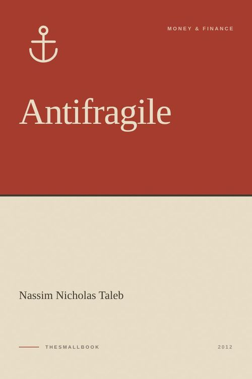
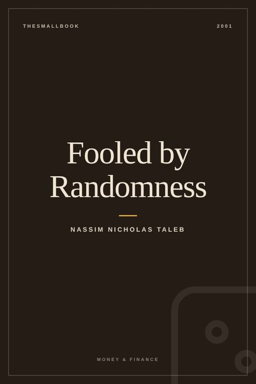
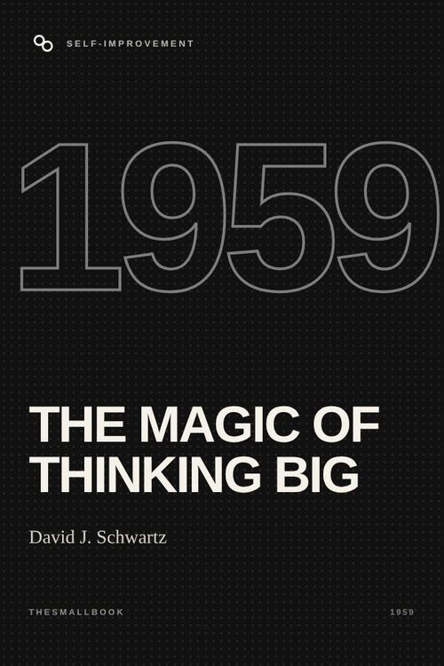

Library › Ask the Library › How do I take smart risks?
How do I take smart risks?
The short answer
Smart risk is a barbell: extreme safety on one side, wild bets on the other, nothing in the middle. Never bet the farm, bet a slice you can lose.
The books behind the answer

Antifragile
Nassim Nicholas Taleb · 2012 · 8 min · 6 lessons
Beyond resilience: don't just survive shocks - design your life so volatility, stress, and chaos make you better.
- The Barbell: 90% boring-safe + 10% wild upside bets. You can't lose everything, and you might win big.

Fooled by Randomness
Nassim Nicholas Taleb · 2001 · 8 min · 6 lessons
Luck wears a suit and calls itself skill. Learn to tell them apart before you copy the wrong person - or become them.
- Skewness: The strategy that's steady and 'safe' can end in ruin. Judge the odds, not the last roll.

The Magic of Thinking Big
David J. Schwartz · 1959 · 8 min · 6 lessons
Believe it can be done. The size of your success is set by the size of your belief - and excusitis is the failure disease.
- Action Cures Fear: Confidence is built by doing. The first risky step is the hardest, and the most valuable.

How to Fail at Almost Everything and Still Win Big
Scott Adams · 2013 · 8 min · 6 lessons
The Dilbert creator failed at everything - then won by using systems instead of goals, stacking mediocre skills into rarity, and managing energy like capital.
- Energy, Luck Surface, and Failing Forward: Risk more, fail faster, learn louder, every failure is tuition for the next bet.
A failure that proves it
Why did Long-Term Capital Management fail?
1998 · FAME · Loss: $4.6B in 4 months
LTCM's Nobel-winning geniuses made one overconfident bet and lost everything. Smart people need the most margin of safety.
Genius plus leverage equals fragility. The smartest people fail the biggest because their confidence is the best-documented - room for error isn't stupidity insurance; it's genius insurance.
Questions people ask next
Can I read this in Hindi?
Yes. This answer is written in simple English. Open any linked book and choose Hindi or Hinglish to read the full lessons in your language, with audio where available.